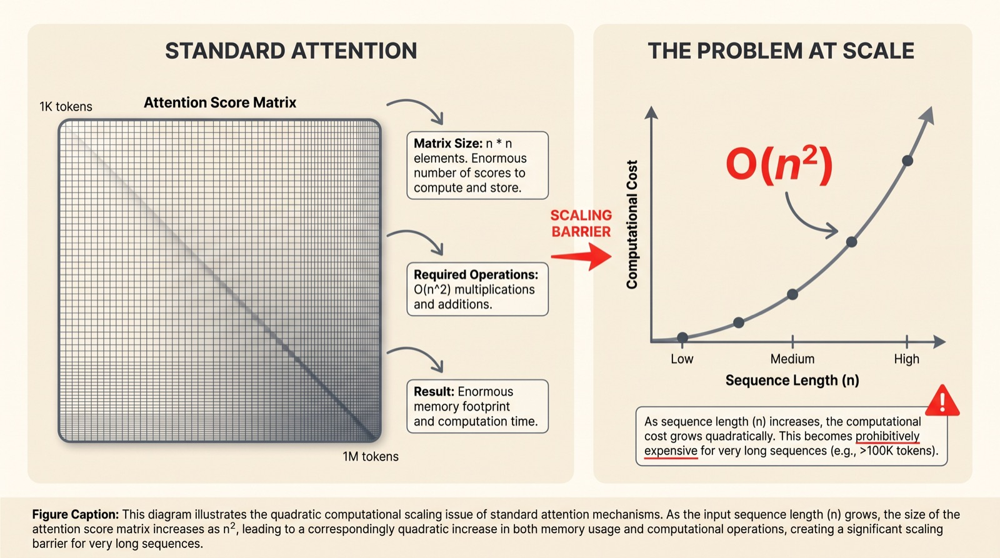
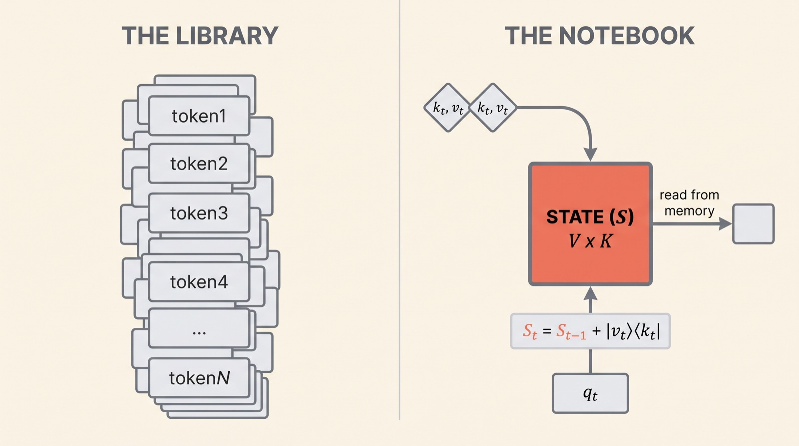
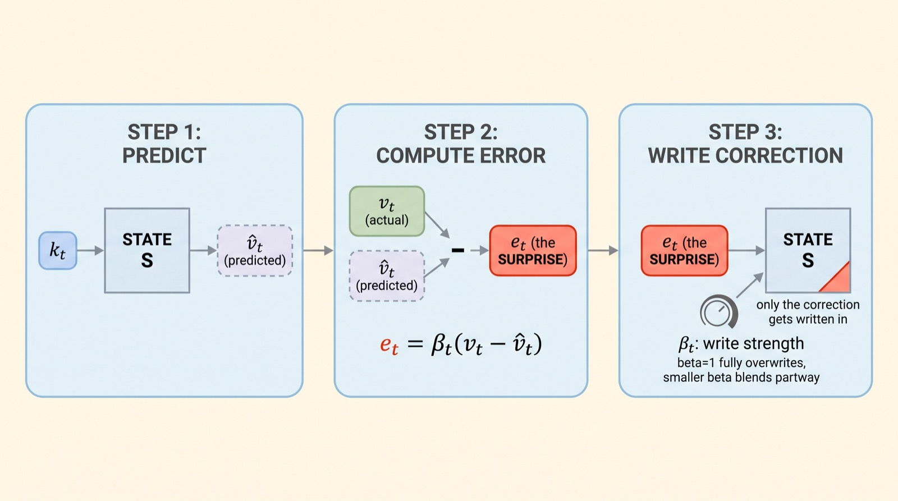
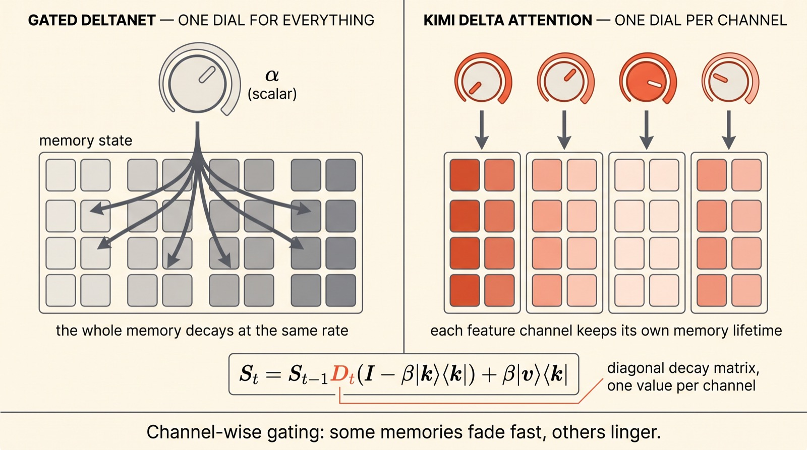
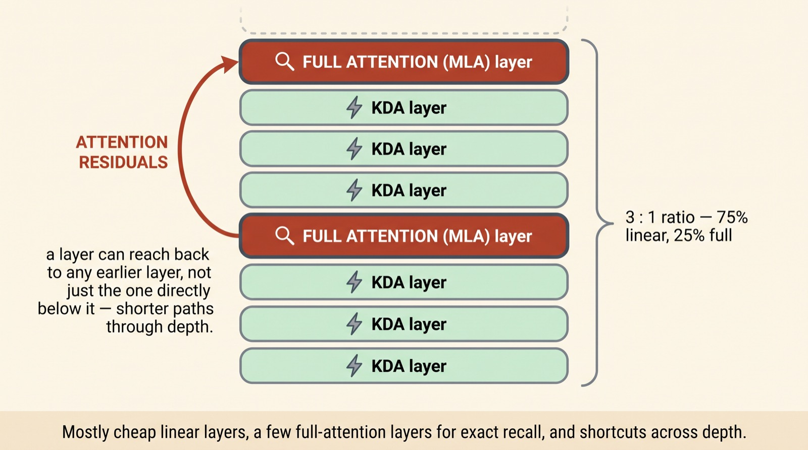
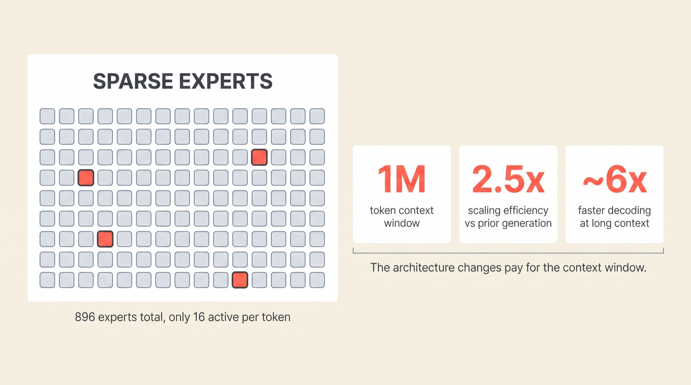

Moonshot AI's newest open model reads a million tokens without the usual quadratic bill
Write only
the surprise
Every extra token you feed a Transformer costs more than the one before it — attention's bill grows with the square of the length. Kimi K3, the 2.8-trillion-parameter open-weight model Moonshot AI released this month, reads a million tokens anyway. It doesn't remember everything it has seen. It keeps a small notebook, and writes down only what surprised it.
Moonshot AI, July 2026. Kimi K3 pairs a linear-attention mechanism called Kimi Delta Attention — built on the delta rule, an idea borrowed from classical recurrent learning — with a sparse mixture-of-experts backbone and a new cross-layer routing trick called Attention Residuals. Moonshot reports roughly 2.5x the scaling efficiency of its predecessor, Kimi K2, at comparable compute.
Scroll to begin.
↓
The wall every long-context model hits
Feed a standard Transformer a thousand extra tokens and it does a thousand extra units of work. Feed it a million, and the work doesn't scale by a million — it scales by roughly a million squared, because every one of those tokens has to be compared against every other token to compute attention. Doubling the context doesn't double the cost. It quadruples it.
That arithmetic is why "long context" has been one of the hardest problems in language models, and why most systems quietly cap out well short of a million tokens. The attention matrix itself becomes enormous, and alongside it the model has to keep a running cache of every key and value it has ever produced — the KV cache — which grows in lockstep with the conversation. Neither cost is optional in standard attention. It's the mechanism working exactly as designed.

Kimi K3 gets to a million tokens by not accepting that trade. Its attention layers mostly don't compare every token to every other token at all. To see how, it helps to start from the equation for attention itself and ask what happens if you strip away one particular piece of it.
From a library to a notebook
Standard attention uses softmax to turn similarity scores into weights before mixing values together. Remove that normalization step — a move researchers have tried since at least 2020 — and the algebra rearranges into something surprising: everything a token needs to know about the past can be collected into a single matrix of fixed size, updated one token at a time.
Think of the difference as a library versus a notebook. Ordinary attention behaves like a library: every book — every past token — stays on the shelf, and answering a query means walking past all of them. A model built this way can answer with total precision, because nothing is ever thrown away, but the library only gets bigger, and slower to search, the longer the conversation runs.
Linear attention behaves like a notebook instead. Each new token's key and value get folded into one running state — mathematically, an outer product added into a matrix — and a query simply reads from that state:

That fixed size is exactly what makes a million-token context affordable: a thousand tokens and a million tokens cost the same to store. It's also, on its own, not good enough — because a notebook that just keeps writing on top of itself runs into a much older problem.
Write only what surprised you
Here's the flaw in the simplest version of that notebook. If you write a value into the state under some key, and then a few tokens later write a different value under a similar key, the second write doesn't replace the first — it lands on top of it. Query the state afterward and you get a blur of both, because the update rule only ever adds. This is the same failure mode that sank early-2020s linear attention research — the notebook filled up with overlapping scribbles and stopped being useful for anything precise.
The fix is called the delta rule, and it's older than deep learning — it comes from classical work on error-driven learning. Before writing anything new, first ask the notebook what it currently thinks the value is. Query the existing state with the new key and get a prediction, v̂t. Then compare that prediction to the actual value, vt, and write only the difference:

βt is a learned "how hard should I correct this" dial between 0 and 1. Set it to 1 and the state's prediction is fully overwritten. Set it lower and the old prediction only moves partway toward the truth. Either way, the model isn't dumping new information onto the pile — it's correcting a specific error, the same way you'd revise one line in a notebook instead of rewriting the whole page.
This delta-rule notebook is the architecture known as DeltaNet, and it's the direct ancestor of what Kimi K3 uses. But error-correction alone still leaves one thing unaddressed: old information that was never wrong, exactly, just no longer relevant.
Not every memory should fade at the same rate
The next fix is forgetting on purpose. Gated DeltaNet, the architecture that came after plain DeltaNet, adds a single dial — a scalar αt between 0 and 1 — that shrinks the entire memory state a little before every delta-rule correction is written in. Turn αt down and the whole notebook fades faster, making room for the present. It's a clean idea, and it works. But it treats every part of the memory identically: one dial, applied uniformly, everywhere.
Kimi Delta Attention's contribution is to notice that a single dial is too blunt. Different pieces of information deserve different lifespans — a fact stated once early in a document might matter for the whole million-token read, while a formatting detail from three paragraphs ago can be dropped immediately. So KDA replaces the one scalar αt with a vector, one decay value per feature channel:

Dt is a diagonal matrix built from that vector — mathematicians call the resulting update "diagonal-plus-low-rank." In plain terms: some channels of the memory can be told to forget almost instantly, while others are told to hold on, and the delta-rule correction still runs on top, targeted and precise. One state, many independent clocks. That's the whole idea behind the name — delta for writing only the correction, gated for controlled forgetting, and Kimi's specific twist, channel by channel, for letting the model decide dimension by dimension what's worth keeping.
Mostly cheap, occasionally exact
A linear-attention model this efficient still gives something up: it can't always retrieve one exact fact from far back with perfect precision, the way full attention can, because everything is compressed through that fixed-size state. Moonshot's answer isn't to choose one mechanism over the other. It's to use both, in a fixed ratio, throughout the network.
Kimi K3's layers run three KDA layers for every one layer of full attention — specifically a compressed variant called MLA, multi-head latent attention, which handles the KV cache more cheaply than ordinary attention while still looking at every prior token exactly. Roughly three-quarters of the network runs the cheap linear notebook; one-quarter keeps the expensive library on hand for when precision actually matters. This 3:1 pattern isn't unique to Kimi — Alibaba's Qwen3-Next uses the same ratio with a different linear-attention variant. It's becoming the working consensus for how to build long-context models without going all-in on linear attention, after at least one lab tried a fully-linear model and had to walk it back.

K3 adds one more piece specific to itself, called Attention Residuals. In an ordinary stack, each layer only reads from the layer directly beneath it — information has to pass through every layer in between to travel from early to late in the network. Attention Residuals lets a layer selectively pull useful representations from any earlier layer, shortening the path information has to travel through depth. Put together, the stack is deliberately unequal: cheap by default, expensive on purpose, with shortcuts built in for anything that would otherwise get lost crossing all that depth.
What the redesign buys you
The attention redesign is only half the model. Kimi K3 is also a sparse mixture-of-experts network: 2.8 trillion parameters in total, but only about 104 billion of them — 16 experts out of 896 — activated for any given token. The rest of the network sits idle for that step, which is what makes a model this large affordable to run at all. Routing which 16 experts fire is handled by a technique Moonshot calls Quantile Balancing, which spreads tokens across experts using the router's own score distribution instead of the hand-tuned balancing heuristics earlier MoE models needed.

None of these numbers are free-floating marketing claims — they trace back to the specific mechanisms above. The million-token window exists because the memory state stays fixed-size regardless of length. The efficiency gain exists because most of the network runs the cheap linear path. And when Moonshot tested this same attention design at smaller scale, in the earlier research model Kimi Linear, long-context decoding ran up to six times faster with three-quarters less KV cache than an equivalent full-attention model — the mechanism, not just the parameter count, is doing the work.
Why this matters
The interesting part of Kimi K3 isn't that it's large, or even that it's open-weight — Moonshot has been shipping open models since K2. It's that the delta rule, an idea from classical recurrent learning that mostly sat unused through the first wave of deep learning, turned out to be exactly the right correction for linear attention's original flaw. DeltaNet showed the idea works. Gated DeltaNet showed it can forget. Kimi Delta Attention showed forgetting doesn't have to be one-size-fits-all.
What's worth watching next is whether the 3:1 hybrid ratio — cheap linear layers doing most of the work, full attention layers on call for precision — keeps holding as models get bigger, or whether it needs to shift. At least one lab has already tried going fully linear and walked it back, citing weaker performance on reasoning and multi-turn tasks. K3 is a bet that the right answer isn't choosing a side, but mixing carefully and being honest about the ratio.